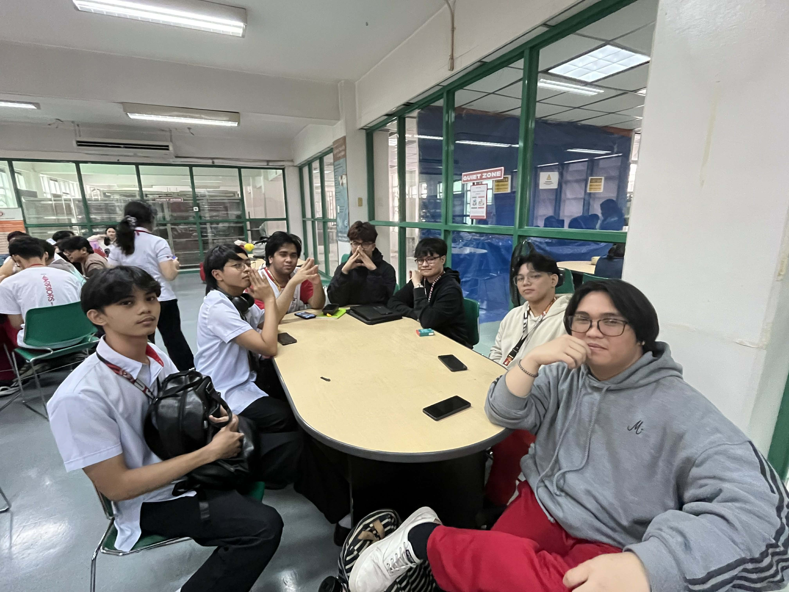
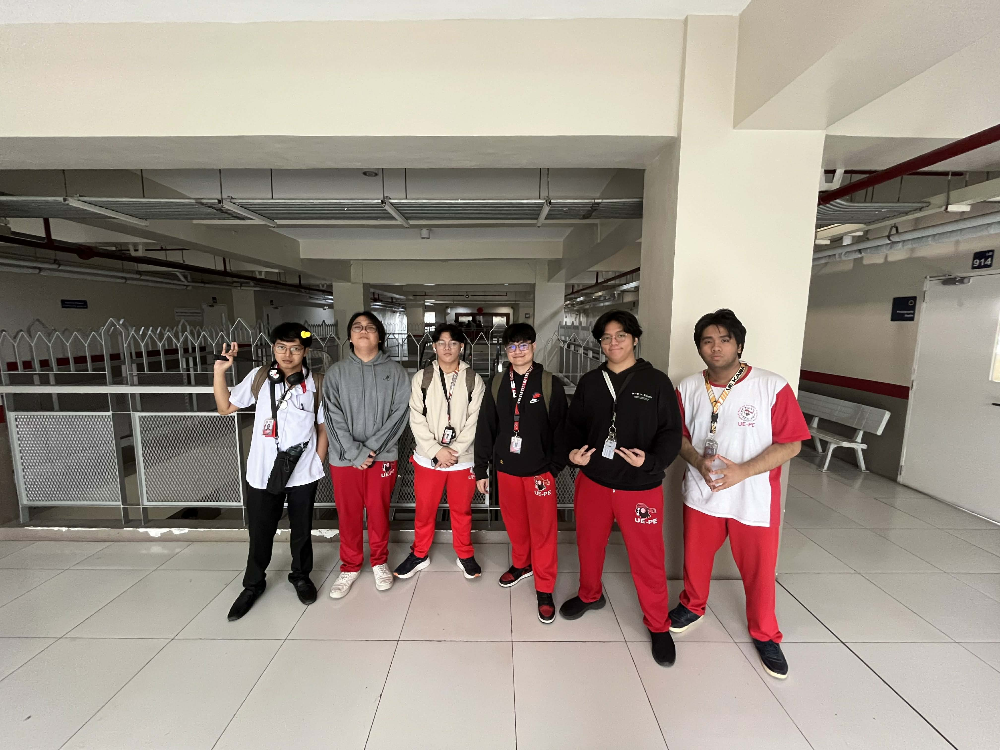

About GameUX Atlas
This page explains who we are and what this website is for. We built GameUX Atlas as a class project to study how game interfaces guide players, deliver feedback, and shape user behavior.
- John Gabrielle Valencerina Team Leader
- Sean Kirby Reales Developer
- Lixter Niño Dinawanao Navigation Expert
- Louiegie Roldan Tester
- Vincent Laureano Palanas Content Manager
- Mark Andrew Mateo UI Designer
- Garnette Kyle Valenzuela Tester
- Basher Sultan Content Manager


What This Website Is About
GameUX Atlas is a collection of game UX case studies. Each game page follows the same structure: an overview of the game, a breakdown of UI components, a look at user interaction, an HCI principles section, and a strengths-and-weaknesses analysis.
Instead of presenting games as simple reviews, we document how different genres communicate information, guide player action, and support decision-making through interface design. The goal is to make those design patterns easier to understand for students, players, and aspiring designers.
- Framework: Human-Computer Interaction applied to real game systems across genres like action RPGs, platformers, rhythm games, and tactical titles.
- Approach: Analyze -> Deconstruct -> Compare -> Document.
- Output: Reusable references for UI/UX critique, class discussion, and design review.
Project Scope
- Compare how different games structure information, feedback, and control.
- Identify strengths and weaknesses in clarity, readability, responsiveness, and player guidance.
- Highlight how each interface supports the pace and goals of its genre.
- Present observations grounded in real player interaction and HCI principles.
Want to explore the analyses? Start at the game list and open any featured game page.